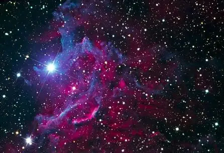
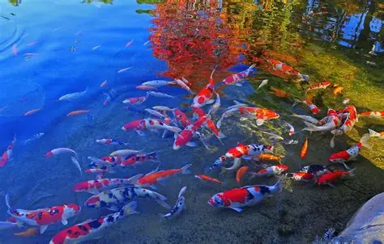

relative images these are saved in the same folder has html code


absolute images these are directly copied and pasted from browser


Star formation begins in molecular clouds, often called stellar nurseries, where regions with higher density start to collapse due to gravitational attraction. As the gas and dust contract, they form a hot, dense core called a protostar. The increasing temperature and pressure in the protostar eventually become sufficient to trigger nuclear fusion, converting hydrogen into helium and releasing energy. This process marks the birth of a main-sequence star, which continues to shine by fusing hydrogen in its core for millions to billions of years. The surrounding material may form planets, asteroids, and other celestial bodies as the star stabilizes.
relative urls these urls open in the same tab/web page
absolute urls these open in a diffrent tab/webpage